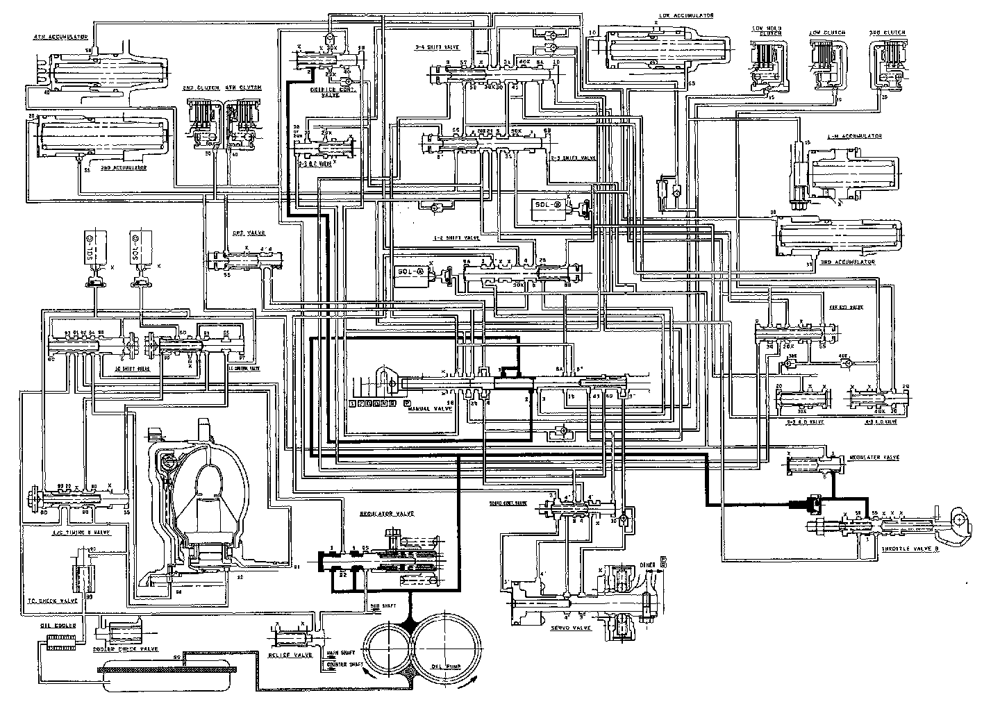

[N] Position

[N] POSITION
As the engine turns, the oil pump also starts to operate. Automatic transmission fluid (ATF) is drawn from (99) and discharged into (1). Then, ATF pressure is controlled by the regulator valve and becomes line pressure (1). The torque converter inlet pressure (92) enters (94) of torque converter through the orifice and discharges into (90).
The torque converter check valve prevents the torque converter pressure from rising. Under this condition, the hydraulic pressure is not applied to the clutches.
NOTE:
- When used, "left" or "right" indicates direction on the flowchart.
- SOL - (A): Shift Control Solenoid Valve A
- SOL - (B): Shift Control Solenoid Valve B
- SOL - (C): Lock-up Control Solenoid Valve A
- SOL - (D): Lock-up Control Solenoid Valve B